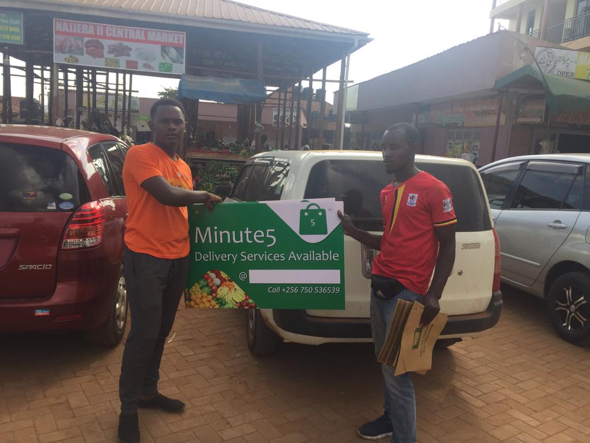

MESSAGE FROM THE CEO

Katumba Jonathan Paul
infodesk@minute5.ug
- THE 1ST MINUTE5 MARKET DAY AND CUSTOMER OF THE MONTH PROGRAM
-
Greetings,
At Minute5, we are always quick to innovate and deliver as promised, Bringing The Market To you, which means that we have to bring the best quality and fresh food to your doorstep at an affordable price. Our team works tirelessly to make sure we bring our customers to the center of everything we do. On that note, it's important to bring to light how we are focusing so much on our customers as we make grocery delivery the new normal. As a way to show appreciation to our loyal customers, we have started a Customer of the month program, where we reward our most loyal customers through free delivery and discounted orders of up to 100,000 UGX. This program involves me, the CEO, to hand-deliver these orders to the customers.Customers of the month get a 100,000 UGX on their next order.
So far, we have interacted with our customers and we are always thinking about them. Our very first customers (Customers of the month June) to enjoy the discounts got their orders discounted and hand-delivered by me. It is through such interactions we shall be able to better serve the consumers. We have also made it a point for all our employees to know all our customers to give that customized experience. This program will go on as company culture and will only get better as we move this journey together.
We are pushing boundaries, redefining the industry, making the impossible possible, and improving Ugandans livelihoods. By tapping and improving the food supply chain of fresh food in Uganda, we are going to be able to create new jobs, improve farmers' income and most importantly, provide affordable groceries to our consumers.
This has given birth to our latest innovation, one that has never been done before, the MARKET DAY . This is an online market day aims at delivering even more affordable and fresh food to consumers, creating new jobs and improving small scale farmers' livelihoods through increasing their income when they sell more products in a shorter time. Having the retail outlet set up and partnering with different vendors and agents in the market, this market day will be the first of its kind where discounts of up to 80% will be given to consumers on selected items and will get their orders delivered in less than an hour. The market day will take place on the last day of the month till the next day of the next month starting this month which will run from 31st July to 1st August .
Fresh food will be discounted up to 80% off during the market day
This market day will help small scale farmers to easily sell off their produce given they partner with us and this is an innovation that is here to stay. We have been able to partner with a number of vendors and different agents in different markets in the major towns which is to help us bring our services closer to the consumers. Among the markets we expanded include Kyaliwajala, Naalya, Buwate, Najeera, Bunga, Kansanga and Kiwatule. And these new onboarded agents and vendors will actively participate in Bringing The Market To You and more so during the market day.
What sets us apart from all these different players in the field and what our loyal customers love about us is that we listen to them and act accordingly to best serve their interests as consumers. We have customized and we shall even go further to make this experience better. It is important to show people the advantages of new ideas and ways of doing things, as this is our quest to make grocery delivery and online shopping the new normal and standard. It is our job to make these dreams come true and forever be remembered and written in the books of history as brave acts done by the game-changers.
Published on 19th July, 2020.